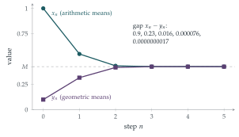

In this question, the following theorem may be used without proof.
Let \(u_1, u_2, \ldots\) be a sequence of real numbers. If the sequence is
bounded above, so \(u_n \leq b\) for all \(n\), where \(b\) is some fixed number
and increasing, so \(u_n \leq u_{n+1}\) for all \(n\)
then there is a number \(L \leq b\) such that \(u_n \to L\) as \(n \to \infty\).
For positive real numbers \(x\) and \(y\), define \(\mathrm{a}(x, y) = \frac12(x + y)\) and \(\mathrm{g}(x, y) = \sqrt{xy}\). Let \(x_0\) and \(y_0\) be two positive real numbers with \(y_0 < x_0\) and define, for \(n \geq 0\), \[x_{n+1} = \mathrm{a}(x_n, y_n), \qquad y_{n+1} = \mathrm{g}(x_n, y_n).\]
By considering \(\bigl(\sqrt{x_n} - \sqrt{y_n}\bigr)^2\), show that \(y_{n+1} < x_{n+1}\), for \(n \geq 0\). Show further that, for \(n \geq 0\),
\(x_{n+1} < x_n\)
\(y_n < y_{n+1}\).
Deduce that there is a value \(M\) such that \(y_n \to M\) as \(n \to \infty\).
Show that \(0 < x_{n+1} - y_{n+1} < \frac12(x_n - y_n)\) and hence that \(x_n - y_n \to 0\) as \(n \to \infty\).
Explain why \(x_n\) also tends to \(M\) as \(n \to \infty\).
Let \[\mathrm{I}(p, q) = \int_0^\infty \frac{1}{\sqrt{(p^2 + x^2)(q^2 + x^2)}}\,\mathrm{d}x,\] where \(p\) and \(q\) are positive real numbers with \(q < p\).
Show, using the substitution \(t = \frac12\left(x - \dfrac{pq}{x}\right)\) in the integral \[\int_{-\infty}^{\infty} \frac{1}{\sqrt{\bigl(\frac14(p+q)^2 + t^2\bigr)\bigl(pq + t^2\bigr)}}\,\mathrm{d}t,\] that \[\mathrm{I}(p, q) = \mathrm{I}\bigl(\mathrm{a}(p, q), \mathrm{g}(p, q)\bigr).\] Hence evaluate \(\mathrm{I}(x_0, y_0)\) in terms of \(M\).
The hook
Take two positive numbers, say \(\sqrt2\) and \(1\). Replace them by their arithmetic mean and their geometric mean. Do it again, and again. Here is what happens:
| \(n\) | \(x_n\) (arithmetic) | \(y_n\) (geometric) |
|---|---|---|
| 0 | \(1.4142135623730950488\) | \(1\) |
| 1 | \(1.2071067811865475244\) | \(1.1892071150027210667\) |
| 2 | \(1.1981569480946342956\) | \(1.1981235214931201226\) |
| 3 | \(1.1981402347938772091\) | \(1.1981402346773072058\) |
| 4 | \(1.1981402347355922074\) | \(1.1981402347355922074\) |
After four steps the two numbers agree to twenty decimal places. The common limit is the arithmetic–geometric mean \(M(\sqrt2, 1) = 1.19814\ldots\)
On 30 May 1799 the 21-year-old Carl Friedrich Gauss wrote in his diary that he had noticed \(1/M(\sqrt2, 1)\) agreed, to eleven decimal places, with a constant that had appeared in a completely different problem: the arc length of a curve called the lemniscate. “This will surely open up an entirely new field of analysis,” he wrote. It did. This question proves the key fact behind Gauss’s discovery: the AGM evaluates an integral that cannot be done by any of the usual methods.
Before you start
Why is the arithmetic mean of two different positive numbers always bigger than their geometric mean? Can you prove it in one line?
That is the AM–GM inequality, and the hint in part (i) gives the one-line proof: \(\bigl(\sqrt{x} - \sqrt{y}\bigr)^2 > 0\) when \(x \neq y\), which expands to \(x + y > 2\sqrt{xy}\). Everything in part (i) follows from this and from the fact that each mean lies between the two numbers it comes from.
Working it through
Stage 1 The two sequences squeeze together
If \(y_n < x_n\) then \(\sqrt{x_n} \neq \sqrt{y_n}\), so \(x_n - 2\sqrt{x_n y_n} + y_n > 0\), which says \(x_{n+1} > y_{n+1}\). Since \(y_0 < x_0\), induction gives \(y_n < x_n\) for all \(n\).
Why is the arithmetic mean of \(x_n\) and \(y_n\) less than \(x_n\), and the geometric mean bigger than \(y_n\)?
Because \(y_n < x_n\): \(x_{n+1} = \frac{x_n + y_n}{2} < \frac{x_n + x_n}{2} = x_n\), and \(y_{n+1} = \sqrt{x_n y_n} > \sqrt{y_n y_n} = y_n\). So \[y_0 < y_1 < y_2 < \cdots < x_2 < x_1 < x_0.\] The \(y_n\) are increasing and bounded above by \(x_0\), so by the theorem they tend to a limit \(M\).
For the gap, \[x_{n+1} - y_{n+1} < x_{n+1} - y_n = \frac{x_n + y_n}{2} - y_n = \frac12(x_n - y_n),\] and it is positive by the first part. So the gap at least halves each time: \(0 < x_n - y_n < (x_0 - y_0)/2^n\), which tends to \(0\).
Finally \(x_n = y_n + (x_n - y_n)\) is the sum of a sequence tending to \(M\) and a sequence tending to \(0\), so \(x_n \to M\) too.■
Stage 2 The substitution
The substitution looks unmotivated, but it is designed so that both brackets under the square root become perfect squares (or nearly).
With \(t = \frac12\left(x - \frac{pq}{x}\right)\), compute \(t^2 + pq\). Then compute \(t^2 + \frac14(p + q)^2\). Do either of them factorise nicely?
First, \[t^2 + pq = \frac14\left(x^2 - 2pq + \frac{p^2q^2}{x^2}\right) + pq = \frac14\left(x + \frac{pq}{x}\right)^2.\] Second, \[\begin{aligned} t^2 + \tfrac14(p + q)^2 &= \frac14\left(x^2 - 2pq + \frac{p^2q^2}{x^2} + p^2 + 2pq + q^2\right) \\ &= \frac{x^4 + (p^2 + q^2)x^2 + p^2q^2}{4x^2} = \frac{(x^2 + p^2)(x^2 + q^2)}{4x^2}. \end{aligned}\] And \(\dfrac{\mathrm{d}t}{\mathrm{d}x} = \dfrac12\left(1 + \dfrac{pq}{x^2}\right) = \dfrac{x^2 + pq}{2x^2}\).
Put these together. As \(x\) runs from \(0\) to \(\infty\), what does \(t\) do? What does the \(t\)-integral become?
As \(x\) increases from \(0\) to \(\infty\), \(t\) increases (its derivative is positive) from \(-\infty\) to \(\infty\). For \(x > 0\), \[\sqrt{\bigl(t^2 + \tfrac14(p+q)^2\bigr)\bigl(t^2 + pq\bigr)} = \frac{\sqrt{(x^2+p^2)(x^2+q^2)}}{2x} \cdot \frac{x^2 + pq}{2x},\] so \[\frac{\mathrm{d}t}{\sqrt{\cdots}} = \frac{x^2 + pq}{2x^2} \cdot \frac{4x^2}{(x^2 + pq)\sqrt{(x^2+p^2)(x^2+q^2)}}\,\mathrm{d}x = \frac{2\,\mathrm{d}x}{\sqrt{(x^2+p^2)(x^2+q^2)}}.\] So the \(t\)-integral equals \(2\,\mathrm{I}(p, q)\).
On the other hand, the \(t\)-integral has exactly the form of \(\mathrm{I}\) with \(p\) and \(q\) replaced by \(\frac12(p+q) = \mathrm{a}(p, q)\) and \(\sqrt{pq} = \mathrm{g}(p, q)\), except that it runs over the whole real line. The integrand is even in \(t\), so the \(t\)-integral is \(2\,\mathrm{I}\bigl(\mathrm{a}(p,q), \mathrm{g}(p,q)\bigr)\). Comparing, \[\mathrm{I}(p, q) = \mathrm{I}\bigl(\mathrm{a}(p, q), \mathrm{g}(p, q)\bigr). \qed\]
Stage 3 Evaluating the integral
Apply this identity repeatedly, starting from \((x_0, y_0)\). What is \(\mathrm{I}(x_0, y_0)\) equal to after \(n\) steps? What happens as \(n \to \infty\)?
\(\mathrm{I}(x_0, y_0) = \mathrm{I}(x_1, y_1) = \mathrm{I}(x_2, y_2) = \cdots = \mathrm{I}(x_n, y_n)\) for every \(n\). As \(n \to \infty\), both arguments tend to \(M\), and \[\mathrm{I}(M, M) = \int_0^\infty \frac{\mathrm{d}x}{M^2 + x^2} = \left[\frac1M \arctan\frac{x}{M}\right]_0^\infty = \frac{\pi}{2M}.\] So \[\mathrm{I}(x_0, y_0) = \frac{\pi}{2M}. \qed\]
The question lets us take the step “\(\mathrm{I}(x_n, y_n) \to \mathrm{I}(M, M)\)” on trust, but it can be justified neatly. Making \(p\) or \(q\) larger makes the integrand smaller, and \(y_n < x_n\), so \[\frac{\pi}{2x_n} = \mathrm{I}(x_n, x_n) < \mathrm{I}(x_n, y_n) < \mathrm{I}(y_n, y_n) = \frac{\pi}{2y_n}.\] Both bounds tend to \(\frac{\pi}{2M}\), and \(\mathrm{I}(x_n, y_n)\) is the same number \(\mathrm{I}(x_0, y_0)\) for every \(n\), so it must equal \(\frac{\pi}{2M}\). A squeeze again, as in Section 2.4.

Looking back
Two monotone sequences squeezing together. One goes up, one goes down, and the gap shrinks to zero. This is the cleanest way to prove two sequences have a common limit.
An invariant. The quantity \(\mathrm{I}(x_n, y_n)\) never changes from step to step. Finding something that stays fixed while everything else moves is one of the most powerful ideas in mathematics.
Clever substitutions are designed, not guessed. The substitution was chosen so that the expressions under the square root factorised.
What’s really going on
Part (i) shows the gap at least halves at each step, which would give about one extra binary digit per step. The table in the hook shows something far more dramatic: the number of correct digits roughly doubles at each step (\(2, 4, 10, 21, 43, \ldots\)). In fact \[x_{n+1} - y_{n+1} = \frac12\bigl(\sqrt{x_n} - \sqrt{y_n}\bigr)^2 = \frac{(x_n - y_n)^2}{2\bigl(\sqrt{x_n} + \sqrt{y_n}\bigr)^2},\] so each gap is roughly a constant times the square of the previous one. This is called quadratic convergence, and we will study it properly in Section 2.7.
Elliptic integrals
Our integral \(\mathrm{I}(p, q)\) is a disguised complete elliptic integral, a type of integral that arises in computing the arc length of an ellipse and that cannot be expressed using the functions you know. Its most famous application is the pendulum. The A-level formula \(T = 2\pi\sqrt{L/g}\) for the period is only an approximation for small swings. The exact period of a pendulum released from angle \(\theta_0\) is \[T = \frac{2\pi\sqrt{L/g}}{M\bigl(1, \cos\frac{\theta_0}{2}\bigr)},\] an elliptic integral evaluated by the AGM. For \(\theta_0 = 90^\circ\) the true period is about \(18\%\) longer than the simple formula predicts. Gauss’s diary entry concerned the lemniscate, a figure-of-eight curve, whose total arc length involves \(\int_0^1 \frac{\mathrm{d}t}{\sqrt{1-t^4}}\); that integral equals \(\mathrm{I}(\sqrt2, 1)\) in disguise, so the AGM evaluates it.
Computing \(\pi\)
In 1976 Richard Brent and Eugene Salamin independently turned Gauss’s ideas into an algorithm for computing \(\pi\) that doubles the number of correct digits at every step. Twenty-five steps give tens of millions of digits. Algorithms of this kind were used in record-breaking computations of \(\pi\) in the 1980s and 1990s, and quadratically convergent algorithms like it are now standard wherever high precision is needed. Compare Viète’s product in Section 2.5, which gains about \(0.6\) of a digit per step.
The thinking skill
When a process changes many things at once, look for a quantity that does not change. Evaluate it at the end of the process, where everything is simple.
Here the process was the AGM step and the invariant was the integral \(\mathrm{I}\). At the end of the process the two arguments were equal and the integral was elementary. Invariants appear throughout mathematics, from conservation of energy in mechanics (Chapter 10) to the proof that some puzzles are impossible.
Try this next
Quadratic convergence. Prove the identity \(x_{n+1} - y_{n+1} = \dfrac{(x_n - y_n)^2}{2(\sqrt{x_n} + \sqrt{y_n})^2}\), and deduce that \(x_{n+1} - y_{n+1} \leq \dfrac{(x_n - y_n)^2}{8 y_0}\).
By hand. Compute \(M(2, 1)\) to six decimal places using a calculator. How many steps did you need?
Scaling. Show that \(M(\lambda x, \lambda y) = \lambda M(x, y)\) for \(\lambda > 0\), and that \(\mathrm{I}(\lambda p, \lambda q) = \lambda^{-1}\mathrm{I}(p, q)\). Check that these two facts are consistent with \(\mathrm{I}(x_0, y_0) = \pi/(2M)\).
The pendulum. Use the formula above to find, to three significant figures, how much longer the period of a pendulum released from \(60^\circ\) is than the small-angle prediction.
Further reading
David Cox, “The arithmetic–geometric mean of Gauss”, L’Enseignement Mathématique 30 (1984). The classic account of the history and mathematics; the first sections need only calculus.
Jonathan Borwein & Peter Borwein, Pi and the AGM (Wiley). The definitive book on the AGM and fast computation of \(\pi\).
Jonathan Borwein & Keith Devlin, The Computer as Crucible (A. K. Peters). Experimental mathematics, including discoveries like Gauss’s, made by spotting numerical coincidences.